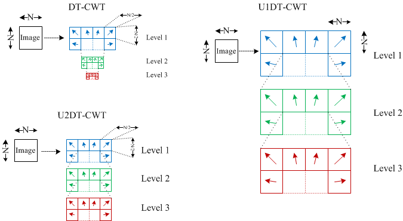

This work introduces two undecimated forms of the 2D Dual Tree Complex Wavelet Transform (DT-CWT) which combine the benefits of the Undecimated Discrete Wavelet Transform (exact translational invariance, a one-to-one relationship between all co-located coefficients at all scales) and the DT-CWT (improved directional selectivity and complex subbands).
The Discrete Wavelet Transform (DWT) is a spatial frequency transform that has been used extensively for analysis, denoising and fusion within image processing applications. It has been recognised that although the DWT gives excellent combined spatial and frequency resolution, the DWT suffers from shift variance. Various adaptations to the DWT have been developed to produce a shift invariant form. Firstly, an exact shift invariance has been achieved using the Undecimated Discrete Wavelet Transform (UDWT). However, the UDWT variant suffers from a considerably overcomplete representation together with a lack of directional selectivity. More recently, the Dual Tree Complex Wavelet Transform (DT-CWT) has given a more compact representation whilst offering near shift invariance. The DT-CWT also offers improved directional selectivity (6 directional subbands per scale) and complex valued coefficients that are useful for magnitude / phase analysis within the transform domain. This paper introduces two undecimated forms of the DT-CWT which combine the benefits of the UDWT (exact translational invariance, a one-to-one relationship between all co-located coefficients at all scales) and the DT-CWT (improved directional selectivity and complex subbands).
This image illustrates the three different 2D Dual Tree Complex Wavelet Transforms

A preprint of the paper is available here
Implementations of three complex wavelet transforms can be downloaded below as mex matlab files. They have been compiled in 32bit and 64bit windows
and 64bit linux formats. If you need an alternative format please mail me at paul.hill
Please reference the following paper if you use this software Hill, P.; Achim, A.; Bull, D., "The Undecimated Dual Tree Complex Wavelet Transform and its application to bivariate image denoising using a Cauchy model," Image Processing (ICIP), 2012 19th IEEE International Conference on , vol., no., pp.1205,1208, Sept. 30 2012-Oct. 3 2012
Forward Transform: NDxWav2DMEX
Backward Transform: NDixWav2DMEX
Useage: w = NDxWav2DMEX(x, J, Faf, af, nondecimate);
y = NDixWav2DMEX(w, J, Fsf, sf, nondecimate);
x,y - 2D arrays
J - number of decomposition
Faf{i}: tree i first stage analysis filters
af{i}: tree i filters for remaining analysis stages
Fsf{i}: tree i first stage synthesis filters
sf{i}: tree i filters for remaining synthesis stages
Nondecimated: 0 (default) for original decimated version, 1 for completely decimated version, 2 for decimation of just first level.
w – wavelet coefficients
w{a}{b}{c}{d} - wavelet coefficients
a = 1:J (scales)
b = 1 (real part); b = 2 (imag part)
c = 1,2; d = 1,2,3 (orientations)
w{J+1}{a}{b} - lowpass coefficients
a = 1,2; b = 1,2
Example of Usage:
% Original Decimated Version
x = rand(256,256);
J = 4;
[Faf, Fsf] = AntonB;
[af, sf] = dualfilt1;
w = NDxWav2DMEX(x, J, Faf, af,0);
y = NDixWav2DMEX(w, J, Fsf, sf,0);
err = x - y;
max(max(abs(err)))
% Decimated Version 1 (no decimation)
x = rand(256,256);
J = 4;
[Faf, Fsf] = NDAntonB2; %(Must use ND filters for both)
[af, sf] = NDdualfilt1;
w = NDxWav2DMEX(x, J, Faf, af, 1);
y = NDixWav2DMEX(w, J, Fsf, sf, 1);
err = x - y;
max(max(abs(err)))
%Decimated Version 2 (decimation on only first level)
x = rand(256,256);
J = 4;
[Faf, Fsf] = AntonB;
[af, sf] = NDdualfilt1; %(Must use ND filters for just these)
w = NDxWav2DMEX(x, J, Faf, af, 2);
y = NDixWav2DMEX(w, J, Fsf, sf, 2);
err = x - y;
max(max(abs(err)))
% SIZE LIMITS
% (s/J^2) must be bigger than 5 (where s is both height and width)
% Height and width must be divisible by 2^J for fully decimated version
% Height and width must be divisible by 2 for nondecimated version 2